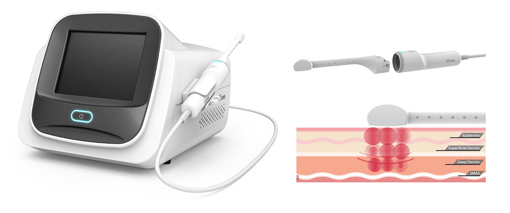
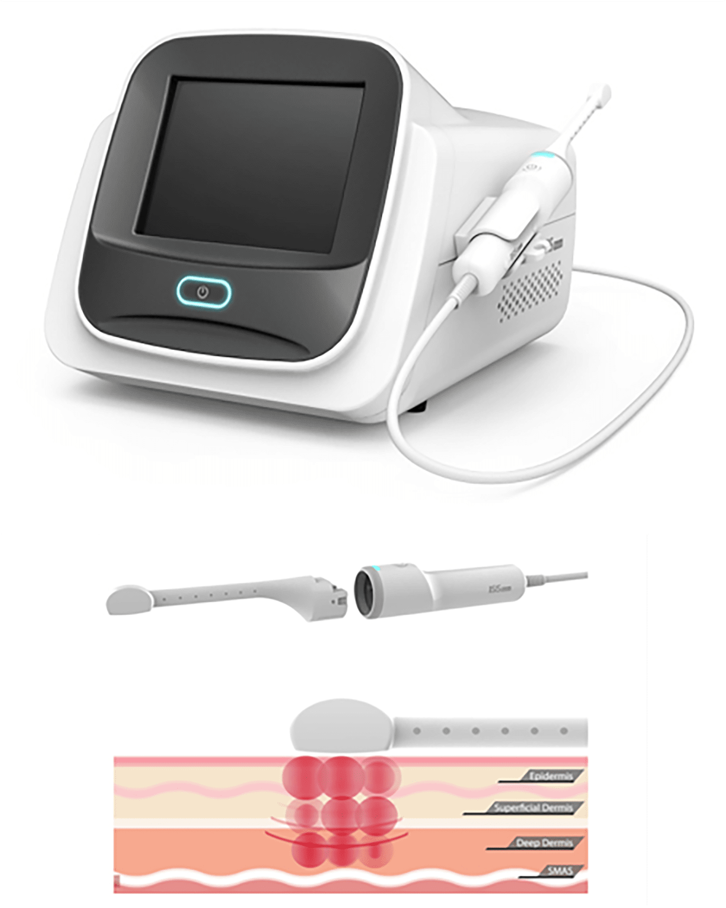
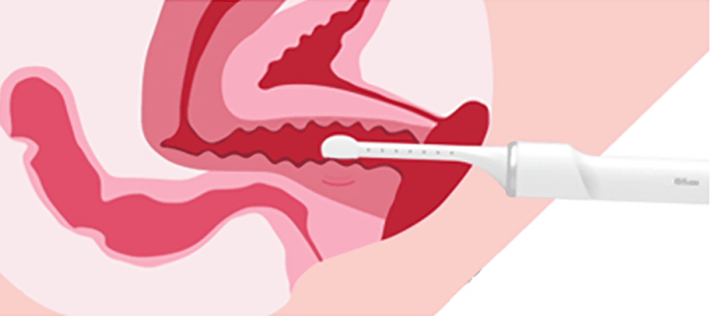
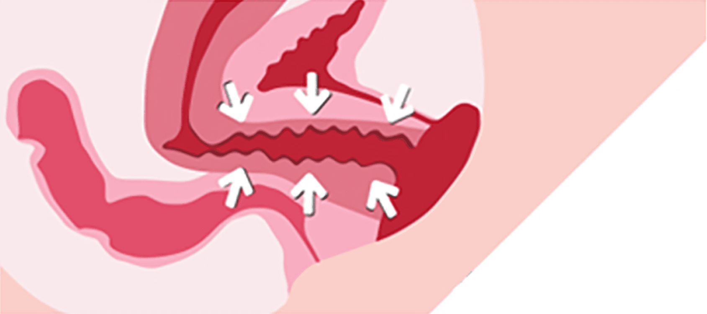
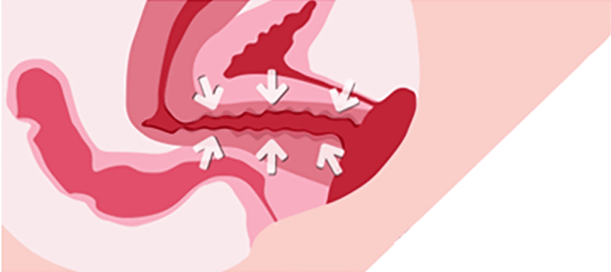
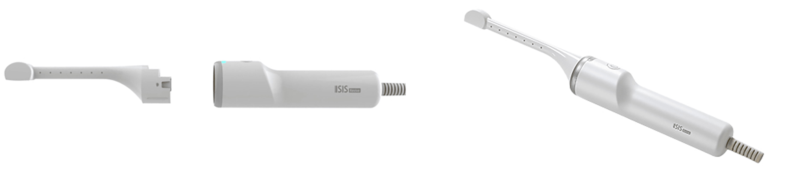
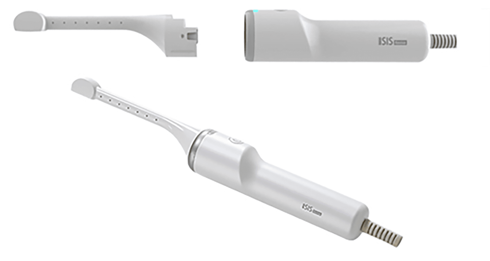

나를 위한
리비브 질 타이트닝
나를위한 산부인과의
“리비브 질 타이트닝”
은
의료진의 노하우와 기술력으로
수술 없이 콜라겐 생성과 세포재생을
통해 질의 탄력을 돌려주는 효과적인 시술입니다
- 시술시간 20분 내외
- 회복기간 없음
- 입원여부 없음
-
마취방법
없음
(수면마취 가능)
리비브란?


다 파장의 멀티 웨이브 고주파를 질 점막 깊숙한 곳까지
전달하여 콜라겐 생성 및 세포 재생 효과로
질 두께 및 탄력을 증가
시켜주는 효과적인 리비브 시술입니다.
리비브 타이트닝 효과
-

-

-

질 타이트닝
- 질 내 탄력
- 요실금
- 질 건조증
- 외음부 탄력


멸균 처리된 1회용 팁 만을 사용하여 위생적입니다.
리비브 효과
-
질 성형 효과
비 수술 / 비 절개 시술로
출혈과 통증이 없습니다. -
안전한 시술
특허받은 열량 제어 방식
멀티웨이브 기술로
안전한 치료가 가능합니다. -
짧은 시술시간
빠른 회복시술 시간이 짧고
일상생활로 바로 복귀가
가능할 정도로
회복이 빠릅니다.
리비브 대상자
-
아랫배가 무겁고 통증이 있으신 분
-
질 건조함 / 가려움증을 느끼시는 분
-
질 내 탄력이 떨어져 고민이신 분
-
성감이 떨어졌다고 느끼시는 분
-
수술에 대한 부담이나 공포증이 있으신 분
-
더 만족스러운 성 생활을 원하시는 분
-
외음부의 탄력을 원하시는 분
-
요실금으로 고민이신 분
Q & A
-
효과는 어떤가요?
시술 직후 따뜻함을 느끼고 몸이 가벼워지며 통증이
감소합니다.
이후 6개월까지 지속적으로 좋아집니다. -
많이 아픈가요?
마취가 따로 필요없고 통증이 없습니다.
-
시술 시간은 얼마나 걸리나요?
30분 정도 소요됩니다.
-
시술은 몇 회를 받아야 하나요?
개인에 따라 차이가 있으며, 1~3회 추천드립니다.
-
시술 후 관리는 어떻게 하나요?
시술 후 특별한 관리가 필요 없이, 바로 일상생활
복귀가 가능합니다.
리비브는 왜
나를위한 산부인과?


-
풍부한 시술 경험,
최적화된 방법으로
시술 진행 -
숙련된 기술과
노하우로
부작용 없이
안전하게 -
꼼꼼한 사후관리를
통해
오래가는
시술 효과 -
마음까지 헤아리는
세심한 진료
질 이완 진단기
를 통한
질압측정

나를위한 산부인과에서는 비비브 질타이트닝,
질 축소술, 질 필러 시술 등에 질압측정을 통한
비교 데이터를 제공해 드리고 있습니다.

프라이빗한 휴식 과 회복
나를위한산부인과에서는 치료를 받는
환자분들이
긴장을 완화하고 편안한
마음으로 쉬실 수 있도록
고급스럽고
편안한 분위기의 1인 회복실을 제공합니다.
레이저 질 타이트닝
시술 후 주의사항
시술 후 주의 사항은 개인 차가 있을 수 있습니다.
-
01
시술 직후 요도 및 점막 조직 자극으로 인한 빈뇨 증상이 일시적으로
생길 수 있습니다.
1주일 내로 자연스럽게 사라지는 증상이오니
걱정하지 마세요. -
02
시술 후 통증이 거의 없어 바로 일상생활이 가능하며, 운동도
제한 없이 하실 수 있습니다. -
03
성관계는 시술 후 바로 가능하지만, 하복부 불편감 혹은 소량의
출혈이 발생할 경우 3일 정도 관계를 피해주세요. -
04
시술 당일 사워, 탕 목욕 및 사우나는 바로 가능입니다.
-
05
점막의 위축이 심할 경우 시술 후 소량의 출혈이 생길 수 있으며,
이러한 증상이 있을 시 본원으로 연락 후
바로 내원하시어 경과를
보시기를 권장 드립니다. -
06
시술 후 음주, 흡연은 시술 결과에 악영향을 끼칠 수 있으니
피해주세요. -
07
시술 후 1주일간 탐폰, 음주, 탕 목욕, 자전거 운동과 같이 시술 부위를
자극할 수 있는 행위는 피해주시고
흡연과 음주는 안정적인 필러
안착을 위해 삼가해주세요.